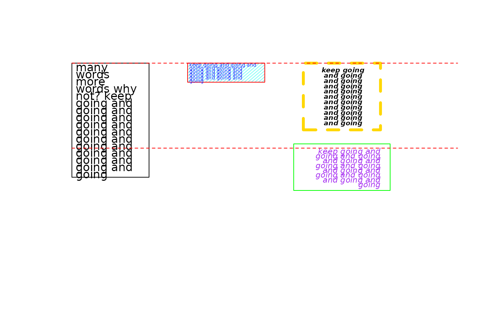

Add text box
textbox.RdAdd text to plot, justified, in a box
Arguments
- x
x position: a vector with min. and max. x-position
- y
y position: location of the top of the box
- textlist
a vector of text strings
- justify
x alignment: 'l'=left, 'c'=center, 'r'=right.
- cex
character expansion
- leading
inter-line spacing
- box
whether to draw a box around the text
- adj
adjustment for x and y position, default is no adjustment, see Details
- font
text font, see Details
- vfont
text font, see Details
- col
text color
- border
box border color
- fill
box fill color
- density
box shading line density, see Details
- angle
box shading line angle, see Details
- lty
box border and shading line types, see Details
- lwd
box border and shading line width, see Details
- margin
amount to adjust box border in or out. See Details
Details
Draws text in the box by pasting the textlist vector together, splitting it into words, and then adding words to the current line until the line is wide enough before moving on to the next line.
margin may be a vector of 1, 2, or 4 values, corresponding to adjustment of all borders (1 value), top/bottom and left/right borders (2 values), or bottom/left/top/right borders (4 values). A positive value moves text inwards from specified (x,y) position with border remaining at (x,y), and a negative value moves the border outwards from (x,y) with the text remaining at (x,y).
The density and angle arguments have the same behavior as in the rect function. The adj, font and vfont arguments have the same behavior as in the text function. The lty and lwd arguments have the same behavior as in the lines function.
Examples
plot.new()
textbox(c(0,0.2), 1, c("many words","more words","why not?",
"keep going",rep("and going",10)))
#> [1] 1.0000000 0.9580456 0.9160912 0.8741367 0.8321823 0.7902279 0.7482735
#> [8] 0.7063191 0.6643646 0.6224102 0.5804558 0.5385014 0.4965470 0.4545925
#> [15] 0.4126381
textbox(c(0.3,0.5), 1, c("keep going",rep("and going",10)), cex=0.45,
col="blue", border="red", fill="#00FFEE80", density=25, angle=60)
#> [1] 1.0000000 0.9813212 0.9626423 0.9439635 0.9252847 0.9066058
textbox(c(0.6,0.8), 1, c("keep going",rep("and going",10)), justify='c', cex=0.6,
leading=1, font=4, border="gold", lty=2, lwd=4, margin=0.025)
#> [1] 0.9750000 0.9438686 0.9127372 0.8816058 0.8504744 0.8193430 0.7882116
#> [8] 0.7570802 0.7259488 0.6948174 0.6636860 0.6325546
textbox(c(0.6,0.8), 0.5, c("keep going",rep("and going",10)), justify='r', cex=0.7,
col="purple", font=3, border="green", margin=-0.025)
#> [1] 0.5000000 0.4719991 0.4439983 0.4159974 0.3879965 0.3599957 0.3319948
#> [8] 0.3039940 0.2759931
lines(c(0,1), c(1,1), col="red", lty=2)
lines(c(0,1), c(0.5,0.5), col="red", lty=2)
